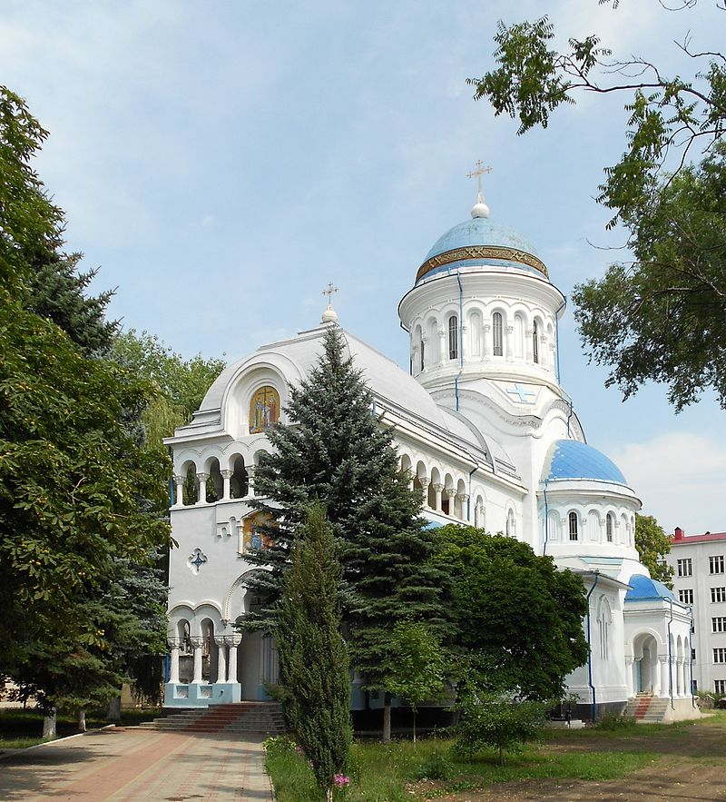
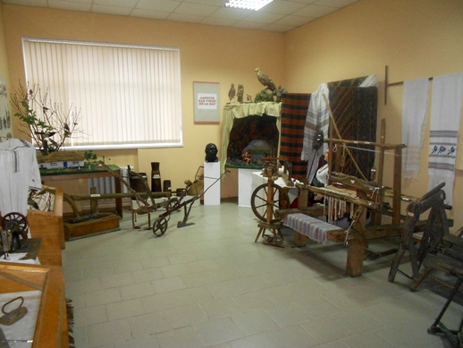

Merită să vizitați
Catedrala Sfinții Împărați Constantin și Elena
Catedrala Sfinții Împărați Constantin și Elena din Bălți, edificiu ridicat între anii 1924–1934 prin truda episcopului Visarion Puiu, este în prezent biserica catedrală a Eparhiei de Bălți și Fălești, subordonată Patriarhiei Moscovei. Edificiul are statutul de monument istoric și arhitectural. Catedrala este construită sub formă de treflă cu pridvor înconjurat de coloane la intrare. Deasupra intrării și a pronaosului, sub turlă, pe cele trei laturi, există un cerdac cu niște coloane care creează între ele o boltă artistic lucrată.
Universitatea de Stat „Alecu Russo”

Istoria universității începe în anul 1945, când 12 iunie s-a deschis un Institut învățătoresc. Universitatea de Stat „Alecu Russo” din Bălți (USARB) este o instituție de învățământ superior, un centru științific, de instruire și cultură din nordul Republicii Moldova, care a dobândit prin realizările sale, în cei peste 60 de ani de activitate, o reputație de seamă, atât pe plan național cât și internațional, instruind specialiști calificați care activează în diverse domenii ale învățământului, științei și economiei naționale. Campusul universitar este plasat într-o manieră compactă (blocuri de studii, cămine, servicii) în centrul municipiului Bălți.
Teatrul Național "Vasile Alexandri"

Teatrul Național „Vasile Alecsandri” din Bălți - monument de artă și arhitectural de importanță națională din Republica Moldova.Teatrul Național „Vasile Alecsandri” din Bălți a fost fondat la 16 mai 1957, mai întâi ca trupă moldovenească pe lângă teatrul rus, care activa în Bălți din anul 1947. Denumirea curentă o primește la 16 mai 1990. Clădirea teatrului a fost inaugurată în aceeași zi.
Muzeul din Bălți
Muzeul din Bălți dispune de un fond muzeistic, de bunuri materiale mobile în număr de peste 34 000 de unități. Veți putea vedea colecții variate din arheologie, colecții numismatice (dinarul roman cu chipul împăratului Marcus Aurelius, monede bizantine, medalii și monede dedicate lui Mihai Eminescu), documente vechi (scrisori și circulare emise de Visarion Puiu), armament (spada unui ostaș din armata lui Ștefan cel Mare), etnografie (costume naționale). Printre exponate se evidențiază o bisericuță cu înălțimea de circa un metru, confecționată integral din miez de pâine, păstrată anterior la Catedrala „Sfântul Nicolae” din Bălți.